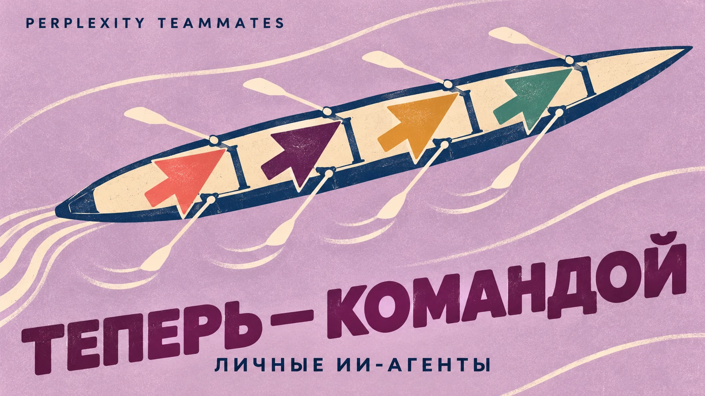

Американская Graphon Labs привлекла $35 млн на борьбу с забывчивостью ИИ-агентов. Компания разрабатывает для них долговременную память, которая связывает разговоры, документы, фотографии и видео. Чтобы помощник мог вспомнить нужную деталь даже спустя недели.
Основатель стартапа Арбааз Хан приводит пример с интернет-магазином. В одних правилах написано: товар можно вернуть в течение 30 дней. В других уточняется, что на покупки с распродажи это правило не распространяется. ИИ, который нашёл только первый документ, даст покупателю неправильный ответ.
Graphon предлагает хранить информацию в виде карты связей. Система запоминает, какие документы относятся друг к другу, откуда взялись сведения и когда они изменились. Если появится новое правило, агент должен учитывать его вместе с предыдущими, а не выдавать первую попавшуюся инструкцию.
Особенно пригодится такая память помощникам, которые работают постоянно и передают друг другу задания. Например, Perplexity уже запустила Teammates — команду ИИ-агентов, способных делиться поручениями. Чем длиннее цепочка задач, тем больше прежних решений приходится держать в голове.

В тесте LoCoMo, проверяющем память о длинных разговорах, Graphon насчитала 93,9% точности. По замерам разработчиков, система при этом использовала на 58% меньше токенов, чем при отправке нейросети всей переписки.
Деньги на развитие технологии нашлись у солидной компании инвесторов. Раунд возглавил RRE Ventures, к нему присоединились HP, Hitachi Ventures, Energy Impact Partners и Gaia VC.
Всего Graphon Labs привлекла уже $43,3 млн.
Разработкой заинтересовались и потенциальные заказчики. Клуб американского футбола San Francisco 49ers рассматривает её для поиска новых спонсорских возможностей. А Hitachi Rail уже предварительно проверила работу технологии со сложными корпоративными данными.
Пока Graphon ориентируется на компании и разработчиков. В дальнейшем такую память хотят перенести и на персональные устройства — телефоны и ноутбуки.